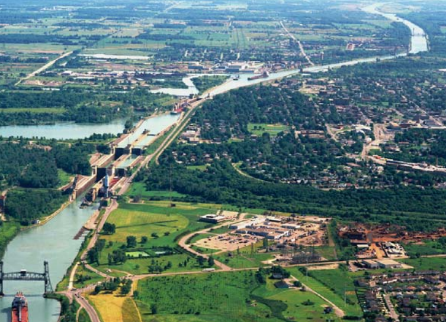

Locks in the Saint Lawrence River
There are seven locks in the Saint Lawrence River portion of the seaway. From downstream to upstream they are:
St. Lambert Lock—Saint Lambert, QC
Côte Ste. Catherine Lock—Sainte-Catherine, QC
Beauharnois Locks (two locks)—Melocheville, QC, at 45°18′12.6″N 73°55′36.5″W and 45°19′0.1″N 73°55′6.6″W
Snell Lock—Massena, NY
Eisenhower Lock—Massena, NY
Iroquois Lock—Iroquois, ON, at 44°49′48″N 75°18′46.8″W
Water Level Elevations:
Lake Ontario is 243 ft (74.1 m) above sea level.
The drop through Iroquois Lock is 1 ft (0.3 m).
Lake St. Lawrence is 242 ft (73.8 m) above sea level.
The drop through Eisenhower Lock is 38 ft (11.6 m).
The Wiley-Dondero Canal is 204 ft (62.2 m) above sea level.
The drop through Snell Lock is 45 ft (13.7 m).
Lake St. Francis is 159 ft (48.5 m) above sea level.
The drop through Upper Beauharnois Lock is 41 ft (12.5 m).
The Beauharnois Canal is 118 ft (36.0 m) above sea level.
The drop through Lower Beauharnois Lock is 41 ft (12.5 m).
Lake St. Louis is 77 ft (23.5 m) above sea level.
The drop through Côte Ste. Catherine Lock is 30 ft (9.1 m).
Laprairie Basin is 47 ft (14.3 m) above sea level.
The drop through St. Lambert Lock is 15 ft (4.6 m).
The drop through the Lachine Rapids is a few feet.
Montreal Harbour is approximately 30 ft (9.1 m) above sea level.